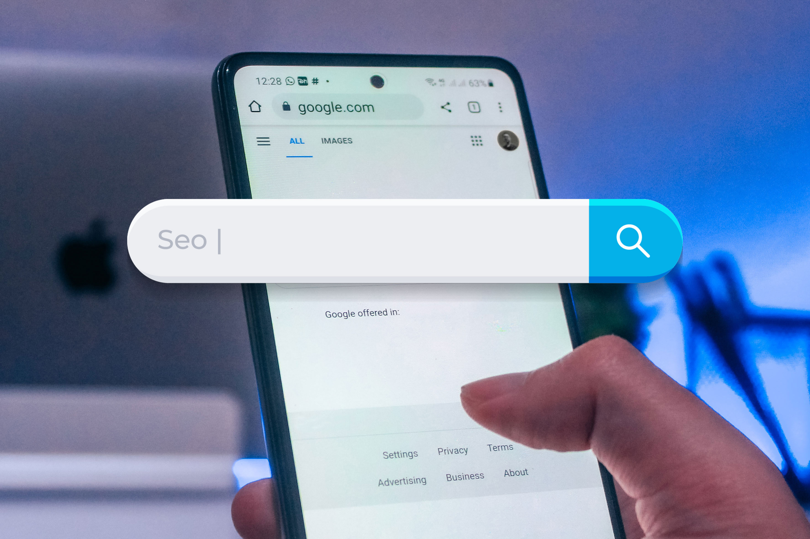

La palabra SEO proviene de las siglas en inglés Search Engine Optimization que sería la Optimización de Motores de Búsqueda en español.
Es el conjunto de técnicas y estrategias que se utilizan para mejorar la visibilidad de un sitio web en los resultados de búsqueda de los motores de búsqueda, como Google. Esto se hace con el fin de atraer a más tráfico de usuarios que llegan a un sitio a través de los resultados en lugar de anuncios pagados o links externos.
Cabe aclarar que los motores de búsqueda son los sistemas informáticos que recopilan toda la información que está almacenada en los servidores web, así cuando el usuario introduce una palabra, estos generan resultados en formas de enlaces que estén relacionadas a esa búsqueda. En la actualidad Google es el buscador web más importante del mundo y el más utilizado. Mientras que Bing es la apuesta de Microsoft.
Seo On Page vs. Off Page
Existen dos categorías el SEO on-page y el SEO off-page. El SEO on-page se refiere a las técnicas utilizadas en el propio sitio para optimizarlo para los motores de búsqueda, mientras que el SEO off-page se refiere a las técnicas utilizadas fuera del sitio para mejorar su relevancia en los resultados de búsqueda.
Es importante en el SEO on-page el contenido del sitio. Los motores de búsqueda utilizan algoritmos avanzados para evaluar la calidad del contenido de un sitio y determinar su posicionamiento en los resultados de búsqueda. Por lo tanto, es importante que el contenido del sitio sea de alta calidad y relevante para el tema que se está tratando. También es fundamental usar palabras clave de manera estratégica para ayudar a los motores a comprender el tema del sitio.
También es importante en el SEO on-page la estructura del sitio, la optimización de las imágenes y la optimización de la velocidad del sitio. Una estructura bien organizada puede ayudar a los motores de búsqueda a comprender mejor el contenido del sitio. La optimización de las imágenes implica utilizar etiquetas alt y títulos de imágenes para proporcionar contexto a los motores de búsqueda. La optimización de la velocidad del sitio se refiere a la manera en que el sitio se carga para los usuarios, hay que evitar que los sitios tengan una velocidad de carga lenta.
El SEO off-page se refiere a las técnicas utilizadas fuera del sitio, una de las formas más efectivas es a través de enlaces externos. Es importante obtener enlaces de sitios de calidad y relevantes para el tema del sitio.
En conclusión, al implementar las técnicas y estrategias de SEO efectivamente, los sitios web pueden mejorar su posicionamiento en los resultados de búsqueda y atraer a más tráfico de usuarios.
Post de Gonzalo Lopez · Imagen de Unsplash